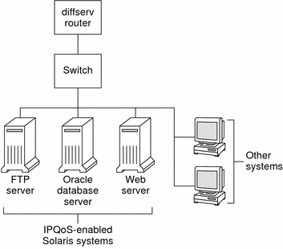
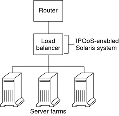
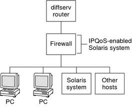

Previous
Previous
Planning for an IPQoS-Enabled Network (Tasks)
You can configure IPQoS on any system that runs the Solaris OS. The IPQoS system then works with Diffserv-aware routers to provide differentiated services and traffic management on an intranet.
This chapter contains planning tasks for adding IPQoS-enabled systems onto a Diffserv-aware network. The following topics are covered.
General IPQoS Configuration Planning (Task Map)
Implementing differentiated services, including IPQoS, on a network requires extensive planning. You must consider not only the position and function of each IPQoS-enabled system, but also each system's relationship to the router on the local network. The following task map lists the major planning tasks for implementing IPQoS on your network.
Task | Description | For Instructions |
|---|---|---|
1. Plan a Diffserv network topology that incorporates IPQoS-enabled systems. | Learn about the various Diffserv network topologies to determine the best solution for your site. | |
2. Plan the different types of services to be offered by the IPQoS systems. | Organize the types of services that the network provides into service-level agreements (SLAs). | |
3. Plan the QoS policy for each IPQoS system. | Decide on the classes, metering, and accounting features that are needed to implement each SLA. | |
4. If applicable, plan the policy for the Diffserv router. | Decide any scheduling and queuing policies for the Diffserv router that is used with the IPQoS systems. | Refer to router documentation for queuing and scheduling policies. |
Planning the Diffserv Network Topology
To provide differentiated services for your network, you need at least one IPQoS-enabled system and a Diffserv-aware router. You can expand this basic scenario in a variety of ways, as explained in this section.
Hardware Strategies for the Diffserv Network
Typically, customers run IPQoS on servers and server consolidations, such as the Sun Enterprise™ 0000 server. Conversely, you can also run IPQoS on desktop systems such as UltraSPARC systems, depending on the needs of your network. The following list describes possible systems for an IPQoS configuration:
Solaris systems that offer various services, such as web servers and database servers
Application servers that offer email, FTP, or other popular network applications
Web cache servers or proxy servers
Network of IPQoS-enabled server farms that are managed by Diffserv-aware load balancers
Firewalls that manage traffic for a single heterogeneous network
IPQoS systems that are part of a virtual local area network (LAN)
You might introduce IPQoS systems into a network topology with already functioning Diffserv-aware routers. If your router does not currently offer Diffserv, consider the Diffserv solutions that are offered by Cisco Systems, Juniper Networks, and other router manufacturers. If the local router does not implement Diffserv, then the router passes marked packets on to the next hop without evaluating the marks.
IPQoS Network Topologies
This section illustrates IPQoS strategies for various network needs.
IPQoS on Individual Hosts
The following figure shows a single network of IPQoS-enabled systems.
Figure 33-1 IPQoS Systems on a Network Segment
This network is but one segment of a corporate intranet. By enabling IPQoS on the application servers and web servers, you can control the rate at which each IPQoS system releases outgoing traffic. If you make the router Diffserv aware, you can further control incoming and outgoing traffic.
The examples in this guide use the "IPQoS on an individual host" scenario. For the example topology that is used throughout the guide, see Figure 33-4.
IPQoS on a Network of Server Farms
The following figure shows a network with several heterogeneous server farms.
Figure 33-2 Network of IPQoS-Enabled Server Farms
In such a topology, the router is Diffserv aware, and therefore able to queue and rate both incoming and outgoing traffic. The load balancer is also Diffserv-aware, and the server farms are IPQoS enabled. The load balancer can provide additional filtering beyond the router by using selectors such as user ID and project ID. These selectors are included in the application data.
This scenario provides flow control and traffic forwarding to manage congestion on the local network. This scenario also prevents outgoing traffic from the server farms from overloading other portions of the intranet.
IPQoS on a Firewall
The following figure shows a segment of a corporate network that is secured from other segments by a firewall.
Figure 33-3 Network Protected by an IPQoS-Enabled Firewall
In this scenario, traffic flows into a Diffserv-aware router where the packets are filtered and queued. All incoming traffic that is forwarded by the router then travels into the IPQoS-enabled firewall. To use IPQoS, the firewall must not bypass the IP forwarding stack.
The firewall's security policy determines whether incoming traffic is permitted to enter or depart the internal network. The QoS policy controls the service levels for incoming traffic that has passed the firewall. Depending on the QoS policy, outgoing traffic can also be marked with a forwarding behavior.
Planning the Quality-of-Service Policy
When you plan the quality-of-service (QoS) policy, you must review, classify, and then prioritize the services that your network provides. You must also assess the amount of available bandwidth to determine the rate at which each traffic class is released onto the network.
QoS Policy Planning Aids
Gather information for planning the QoS policy in a format that includes the information needed for the IPQoS configuration file. For example, you can use the following template to list the major categories of information to be used in the IPQoS configuration file.
Table 33-1 QoS Planning Template
Class | Priority | Filter | Selector | Rate | Forwarding? | Accounting? |
|---|---|---|---|---|---|---|
Class 1 | 1 | Filter 1 Filter 3 | Selector 1 Selector 2 | Meter rates, depending on meter type | Marker drop precedence | Requires flow-accounting statistics |
Class 1 | 1 | Filter 2 | Selector 1 Selector 2
| N/A | N/A | N/A |
Class 2 | 2 | Filter 1 | Selector 1 Selector 2 | Meter rates, depending on meter type | Marker drop precedence | Requires flow-accounting statistics |
Class 2 | 2 | Filter 2 | Selector 1 Selector 2 | N/A | N/A | N/A |
You can divide each major category to further define the QoS policy. Subsequent sections explain how to obtain information for the categories that are shown in the template.
QoS Policy Planning (Task Map)
This task map lists the major tasks for planning a QoS policy.
Task | Description | For Instructions |
|---|---|---|
1. Design your network topology to support IPQoS. | Identify the hosts and routers on your network to provide differentiated services. | |
2. Define the classes into which services on your network must be divided. | Examine the types of services and SLAs that are offered by your site, and determine the discrete traffic classes into which these services fall. | |
3. Define filters for the classes. | Determine the best ways of separating traffic of a particular class from the network traffic flow. | |
4. Define flow-control rates for measuring traffic as packets leave the IPQoS system. | Determine acceptable flow rates for each class of traffic. | |
5. Define DSCPs or user-priority values to be used in the QoS policy. | Plan a scheme to determine the forwarding behavior that is assigned to a traffic flow when the flow is handled by the router or switch. | |
6. If applicable, set up a statistics-monitoring plan for traffic flows on the network. | Evaluate the traffic classes to determine which traffic flows must be monitored for accounting or statistical purposes. |
Note - The rest of this section explains how to plan the QoS policy of an IPQoS-enabled system. To plan the QoS policy for the Diffserv router, refer to the router documentation and the router manufacturer's web site.